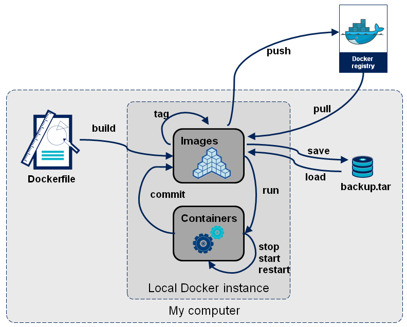

Docker¶
1. Docker 基础¶
1.1 基本组成¶
- 镜像（image）：只读的模板，镜像可以用来创建 Docker 容器，一个镜像可以创建很多容器
- 容器（container）：类似于一个虚拟化的运行环境，容器是用镜像创建的运行实例
- 仓库（repository）：集中存放镜像文件的场所
1.2 工作原理¶
Docker 是一个 Client-Server 结构的系统，Docker 以 守护进程 运行在主机上， 然后通过 Socket 连接 从客户端访问，守护进程从客户端接受命令并管理运行在主机上的容器。
1.3 命令总览¶

1.4 帮助启动类命令¶
启动 docker：systemctl start docker
开机启动：systemctl enable docker
停止 docker：systemctl stop docker
重启 docker：systemctl restart docker
查看 docker 状态：systemctl status docker
查看 docker 概要信息：docker info
查看 docker 总体帮助文档：docker --help
查看 docker 命令帮助文档：docker command --help
1.5 镜像命令¶
| Command | Description |
|---|---|
docker image history |
Show the history of an image |
docker image import |
Import the contents from a tarball to create a filesystem image |
docker image inspect |
Display detailed information on one or more images |
docker image load |
Load an image from a tar archive or STDIN |
docker image ls |
List images |
docker image prune |
Remove unused images |
docker image pull |
Download an image from a registry |
docker image push |
Upload an image to a registry |
docker image rm |
Remove one or more images |
docker image save |
Save one or more images to a tar archive (streamed to STDOUT by default) |
docker image tag |
Create a tag TARGET_IMAGE that refers to SOURCE_IMAGE |
列出本地镜像：docker images，（-a，列出本地所有的镜像，-q，只显示镜像ID ）
查找镜像：docker search image-name，（--limit N，列出 N 个镜像）
下载镜像：docker pull image-name:TAG，（无 TAG 默认下载 latest）
删除镜像：docker rmi image-id，docker rmi image-name1:TAG image-name2:TAG，docker rmi $(docker images -qa)，（-f 强制删除）
查看镜像/容器/数据卷所占空间：docker system df
提交镜像：docker commit [OPTIONS] CONTAINER [REPOSITORY[:TAG]]
上传镜像：docker push [OPTIONS] NAME[:TAG]
1.6 容器命令¶
| Command | Description |
|---|---|
docker container attach |
Attach local standard input, output, and error streams to a running container |
docker container commit |
Create a new image from a container's changes |
docker container cp |
Copy files/folders between a container and the local filesystem |
docker container create |
Create a new container |
docker container diff |
Inspect changes to files or directories on a container's filesystem |
docker container exec |
Execute a command in a running container |
docker container export |
Export a container's filesystem as a tar archive |
docker container inspect |
Display detailed information on one or more containers |
docker container kill |
Kill one or more running containers |
docker container logs |
Fetch the logs of a container |
docker container ls |
List containers |
docker container pause |
Pause all processes within one or more containers |
docker container port |
List port mappings or a specific mapping for the container |
docker container prune |
Remove all stopped containers |
docker container rename |
Rename a container |
docker container restart |
Restart one or more containers |
docker container rm |
Remove one or more containers |
docker container run |
Create and run a new container from an image |
docker container start |
Start one or more stopped containers |
docker container stats |
Display a live stream of container(s) resource usage statistics |
docker container stop |
Stop one or more running containers |
docker container top |
Display the running processes of a container |
docker container unpause |
Unpause all processes within one or more containers |
docker container update |
Update configuration of one or more containers |
docker container wait |
Block until one or more containers stop, then print their exit codes |
列出当前运行的容器：docker ps [OPTIONS]，（-a，列出当前所有正在运行的容器 + 历史上运行过的容器，-l，显示最近创建的容器，-n，显示最近 n 个创建的容器，-q，静默模式，只显示容器编号）
创建并启动容器：docker run [OPTIONS] IMAGE [COMMAND] [ARG...]，（-d，后台运行容器并返回容器ID，-i，以交互模式运行容器，-t，为容器重新分配一个伪输入终端，-P，随机端口映射，-p，指定端口映射）
启动容器：docker start container-id/container-name
重启容器：docker restart container-id/container-name
进入正在运行的容器：
docker exec -it container-id：在容器中打开新的终端，并且可以启动新的进程，用 exit 退出，不会导致容器的停止docker attach container-id：直接进入容器启动命令的终端，不会启动新的进程，用 exit 退出，会导致容器的停止
退出容器：
exit：exit 退出，容器停止ctrl + p + q：容器不停止
停止容器：
- 停止容器：
docker stop container-id/container-name - 强制停止容器：
docker kill container-id/container-name
删除容器：
- 删除单个：
docker rm container-id - 删除多个：
docker rm -f $(docker ps -a -q)；docker ps -a -q | xargs docker rm
容器日志：docker logs container-id
容器进程：docker top container-id
容器细节：docker inspect container-id
容器拷贝文件到主机：docker cp container-id:容器路径 主机路径
主机拷贝文件到容器：docker cp 主机路径 container-id:容器路径
1.7 数据卷¶
数据卷是一个可供一个或多个容器使用的特殊目录，它绕过 UnionFS，在容器之间共享和重用，对数据卷的修改会立马生效，对数据卷的更新，不会影响镜像，数据卷默认会一直存在，即使容器被删除。
| Command | Description |
|---|---|
docker volume create |
Create a volume |
docker volume inspect |
Display detailed information on one or more volumes |
docker volume ls |
List volumes |
docker volume prune |
Remove unused local volumes |
docker volume rm |
Remove one or more volumes |
docker volume update |
Update a volume (cluster volumes only) |
-
添加容器卷：
-v [宿主机路径或卷名]:[容器内路径] -
读写规则映射添加：
-v [宿主机路径或卷名]:[容器内路径]:[rw|ro]（读写/只读，默认读写） -
卷的继承和共享：
--volumes-from <容器名或ID>
[注] 不使用目录以名称开头会识别为数据卷而非本地目录，什么都不指定创建匿名数据卷
1.8 Dockerfile¶
1.8.1 保留字指令¶
- FROM：基础镜像，当前新镜像是基于哪个镜像的，指定一个已经存在的镜像作为模板，第一条必须是
FROM - MAINTAINER：镜像维护者的姓名和邮箱地址
-
ADD：将宿主机目录下的文件拷贝进镜像且会自动处理
URL和 解压tar压缩包 -
ADD [--chown=<user>:<group>] [--chmod=<perms>] [--checksum=<checksum>] <src>... <dest> ADD [--chown=<user>:<group>] [--chmod=<perms>] ["<src>",... "<dest>"]-
COPY：拷贝文件和目录到镜像中，从构建上下文目录（docker build 所在路径）中源路径的文件/目录复制目标路径位置
-
COPY [--chown=<user>:<group>] [--chmod=<perms>] <src>... <dest> -
COPY [--chown=<user>:<group>] [--chmod=<perms>] ["<src>",... "<dest>"] -
RUN：容器构建时需要运行的命令
-
shell 格式：
RUN <命令行命令> - exec 格式：
RUN ["可执行文件", "参数1", "参数2"]
-
WORKDIR：指定在创建容器后，终端默认登录进来的工作目录
-
USER：指定该镜像以什么样的用户去执行，不指定默认是
root
- CMD：指定容器启动后运行的命令。如果有多个
CMD指令，只有最后一个生效。 - shell 格式：
CMD command param1 param2 - exec 格式：
CMD ["executable","param1","param2"] - 作为
ENTRYPOINT默认参数，exec格式：CMD ["param1","param2"] - ENV：用来在构建镜像过程中设置环境变量
-
EXPOSE：当前容器对外暴露出的端口
-
VOLUME：容器数据卷，用于数据保存和持久化
- ENTRYPOINT：类似
CMD命令，但是ENTRYPOINT不会被docker run后面的命令覆盖，这些命令行参数会被当做参数传递给ENTRYPOINT指令指定的程序（即相当于 ENTRYPOINT 和 CMD 并用，CMD 给 ENTRYPOINT 传参）。如果有多个ENTRYPOINT指令，只有最后一个生效。 - shell格式：
ENTRYPOINT command param1 param2 - exec 格式：
ENTRYPOINT ["executable", "param1", "param2"]
1.8.2 保留字运行时机¶

2. Docker 网络¶
2.1 基本命令¶
| Command | Description |
|---|---|
docker network connect |
Connect a container to a network |
docker network create |
Create a network |
docker network disconnect |
Disconnect a container from a network |
docker network inspect |
Display detailed information on one or more networks |
docker network ls |
List networks |
docker network prune |
Remove all unused networks |
docker network rm |
Remove one or more networks |
2.2 网络模式¶
bridge mode：使用 --network bridge 指定，默认使用 docker0
Docker 服务默认会创建一个 docker0 网桥（其上有一个 docker0 内部接口），该桥接网络的名称为docker0，它在内核层连通了其他的物理或虚拟网卡，这就将所有容器和本地主机都放到同一个物理网络。Docker 默认指定了 docker0 接口 的 IP 地址和子网掩码，让主机和容器之间可以通过网桥相互通信。（网桥的 veth 接口连接容器的 eth0 网卡）
host mode：使用 --network host 指定
容器将不会获得一个独立的 Network Namespace， 而是和宿主机共用一个 Network Namespace。容器将不会虚拟出自己的网卡而是使用宿主机的IP和端口。
none mode：使用 --network none 指定
禁用网络功能，只有 lo 标识（即127.0.0.1 表示本地回环）
container mode：使用 --network container:container-name / container:container-id 指定
新建的容器和已经存在的一个容器共享一个网络ip配置而不是和宿主机共享。新创建的容器不会创建自己的网卡，配置自己的IP，而是和一个指定的容器共享IP、端口范围等。同样，两个容器除了网络方面，其他的如文件系统、进程列表等还是隔离的。
3. Docker Compose¶
3.1 常用命令¶
| cmd | func |
|---|---|
| docker-compose -h | 查看帮助 |
| docker-compose up -d | （-d 后台）启动所有docker-compose服务 |
| docker-compose down | 停止并删除容器、网络、卷、镜像 |
| docker-compose restart | 重启服务 |
| docker-compose start | 启动服务 |
| docker-compose stop | 停止服务 |
| docker-compose ps | 展示当前 docker-compose 编排过的运行的所有容器 |
| docker-compose top | 展示当前 docker-compose 编排过的容器进程 |
| docker-compose config | 检查配置 |
| docker-compose exec yml里面的服务id | 进入容器实例内部 |
| docker-compose logs yml里面的服务id | 查看容器输出日志 |
4. Docker 容器监控¶
- CAdvisor：容器资源监控工具,包括容器的内存,CPU,网络IO,磁盘IO等监控,同时提供了一个WEB页面用于查看容器的实时运行状态。
- InfluxDB：InfluxDB是一个时序数据库，专门用于存储时序相关数据，很适合存储CAdvisor的数据。
- Granfana：数据监控分析可视化平台,支持多种数据源配置和丰富的插件及模板功能,支持图表权限控制和报警。
协调工作：CAdvisor 负责收集容器的随时间变化的数据，InfluxDB 负责存储时序数据，Grafana 负责分析和展示时序数据。